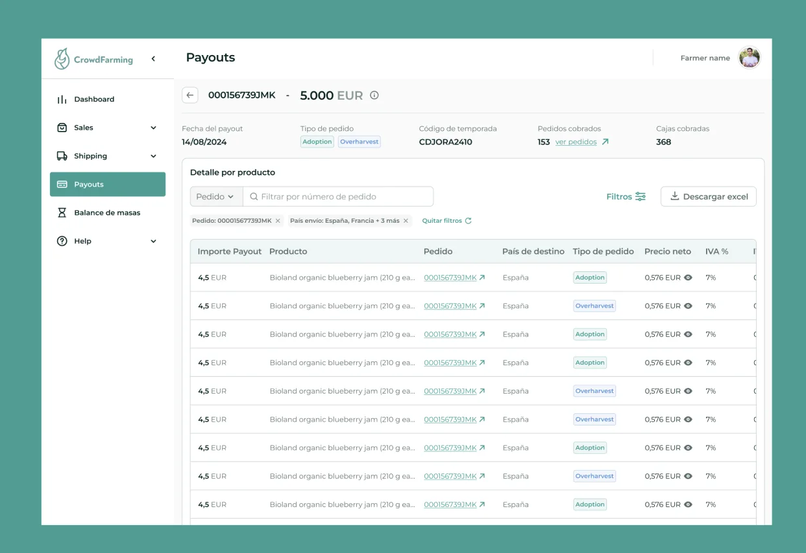
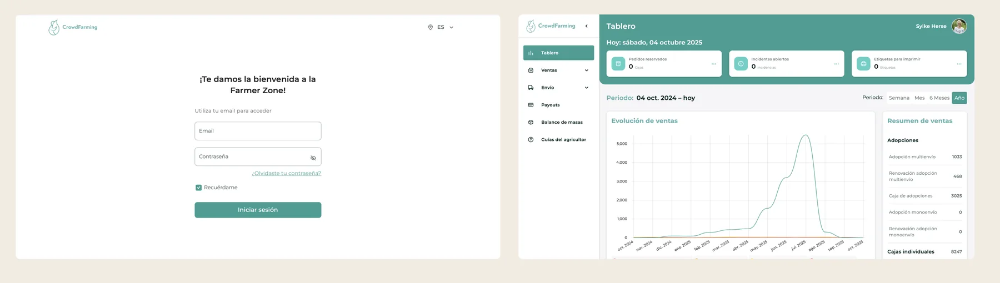
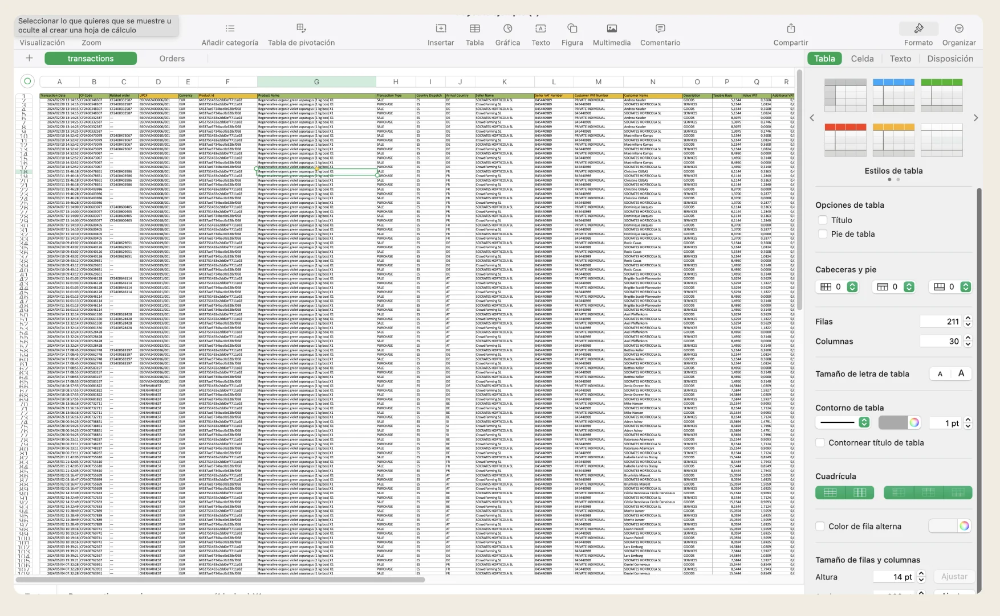
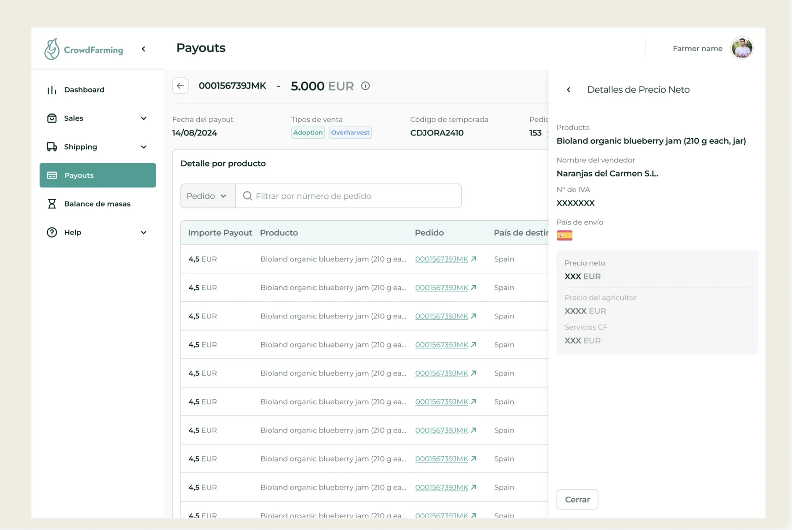
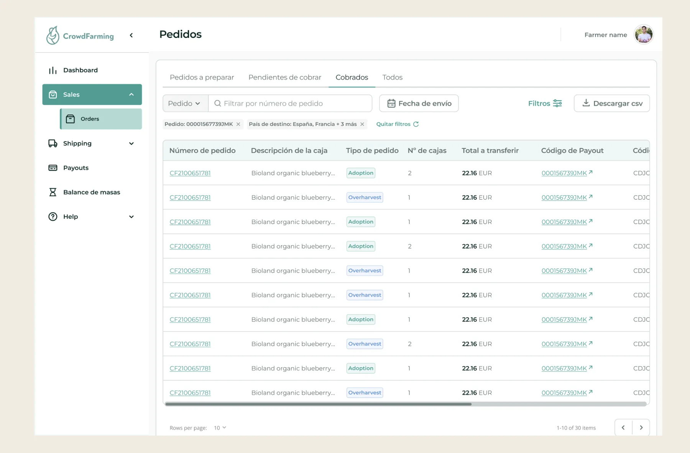

Pagos de FarmerZone
Del Excel gigante a una sección de pagos clara, transparente y trazable para los agricultores.

Contexto
La FarmerZone es el portal privado de todos los agricultores que venden a través de la plataforma de CrowdFarming. Es su dashboard central para gestionar las actividades clave de su negocio, como:
- Seguir las ventas y las adopciones
- Revisar los pedidos y los próximos envíos

El reto
Cada mes, el equipo de finanzas enviaba a los agricultores un Excel gigante con el desglose detallado de su pago.

La hoja de cálculo era tan compleja que hizo falta un tutorial en YouTube para explicársela a los agricultores.

¿Cómo podíamos llevar este proceso a la FarmerZone?
Investigación
- Primero, estudié el Excel gigante columna por columna.
- Mi objetivo era encontrar una forma más sencilla de agrupar y mostrar toda esa información.
- Creo que vi el vídeo tutorial unas 30 veces ▶️.
- Descubrir qué problemas (además de los evidentes) tenían los agricultores con esto.

Hallazgos clave
La solución
Una sección de pagos clara y accionable

- La página empieza con un dashboard resumen que da a los agricultores una visión rápida y general de sus datos de ingresos más importantes.
- Debajo hay una tabla detallada y con buscador de cada pago, que aporta la transparencia y la trazabilidad totales que faltaban en el antiguo Excel.
- Los agricultores pueden filtrar por temporada o por rango de fechas, y así tienen pleno control para encontrar justo la información que necesitan.
La página de detalle del pago

- Esta pantalla ofrece trazabilidad total: muestra cada producto incluido en el pago y lo enlaza con su pedido original.
- Arriba se muestra un resumen de todos los pedidos incluidos y hay una opción de «Descargar a Excel» para su propia contabilidad.
Desglose completo del precio

Para el máximo nivel de detalle, los agricultores pueden hacer clic en cualquier producto y ver el desglose completo del precio.
Conectando pedidos con pagos

El proyecto de Pagos reveló una oportunidad para rediseñar toda la sección de «Pedidos».